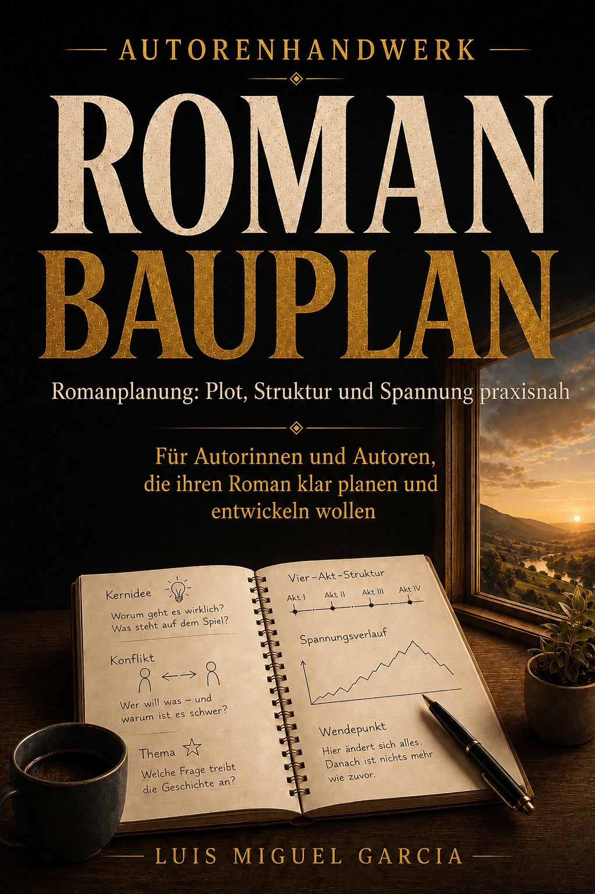
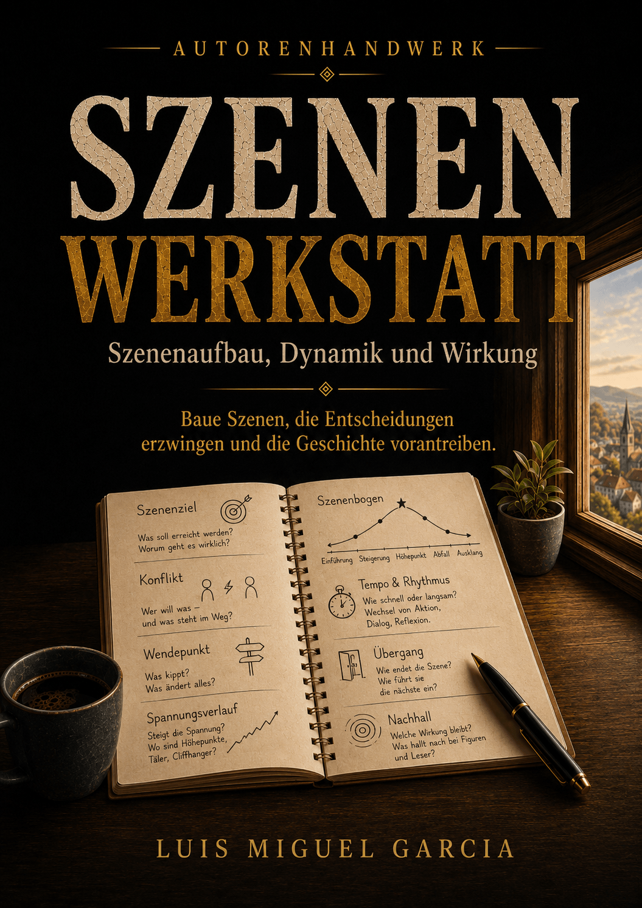
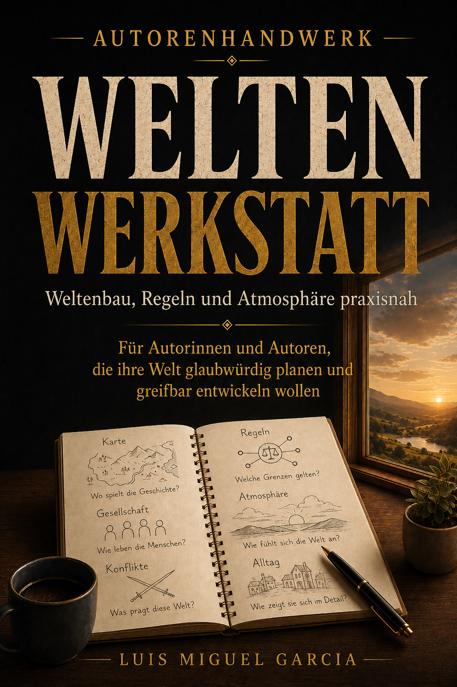
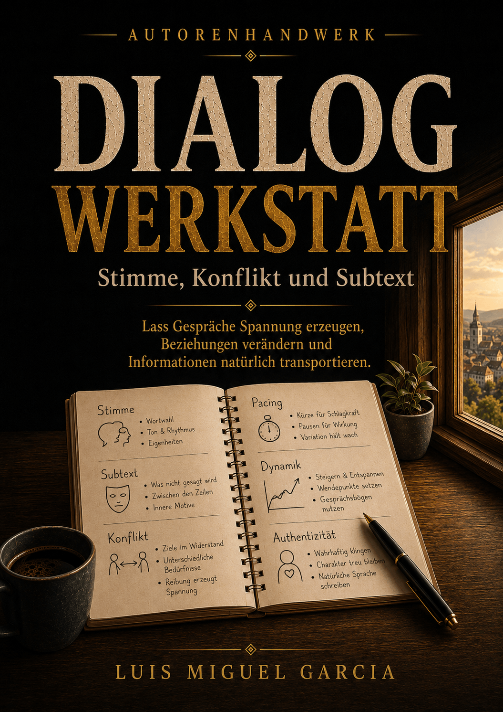
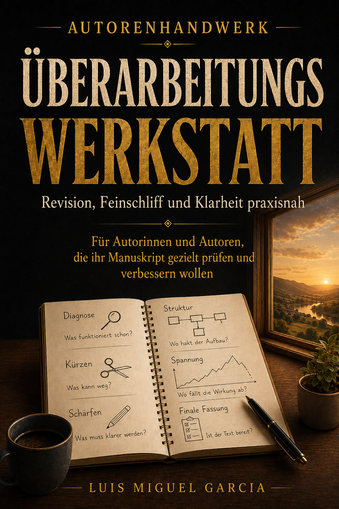
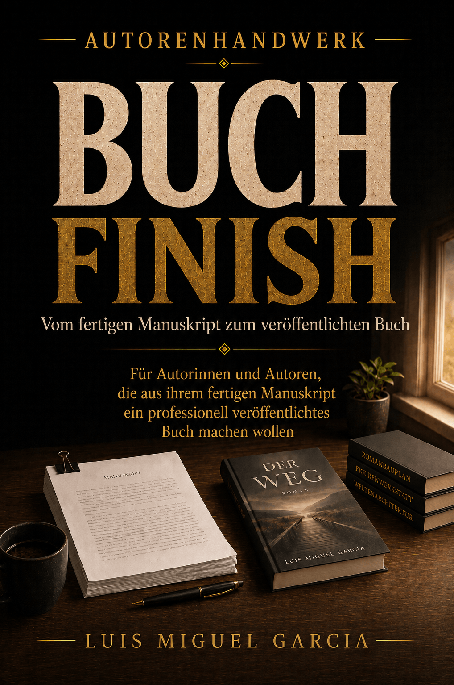

Verständlich erklärt
Kompakte Theorie in klarer Sprache. Fachbegriffe nur dort, wo sie wirklich helfen.
WERKZEUGE FÜR GESCHICHTEN, DIE TRAGEN
Autorenhandwerk verbindet eigenständige Arbeitsbücher mit einem frei zugänglichen Wissensbereich – vom ersten Einfall über Schreiben und Überarbeitung bis zur Veröffentlichungsvorbereitung.
DAS PRINZIP
Du musst nicht nach einer einzigen Methode schreiben. Jeder Band konzentriert sich auf einen klaren Bereich des Handwerks und funktioniert eigenständig.
Nutze genau die Werkzeuge, die du für dein aktuelles Problem brauchst: zum Planen, Entwickeln, Prüfen, Überarbeiten, Reparieren oder Veröffentlichen.
Zusammen bilden die Bände ein flexibles Gesamtsystem. Einzeln bleiben sie praktische Arbeitsbücher für konkrete Aufgaben.
DIE BÄNDE
Neun eigenständige Bände. Jeder löst eine andere Aufgabe. Zusammen begleiten sie den gesamten Weg einer Geschichte.
Die Buchreihe befindet sich derzeit in Vorbereitung. Die Bände sind noch nicht veröffentlicht; Verkaufslinks folgen erst nach der jeweiligen Veröffentlichung.
Plot, Struktur und Spannung – vom ersten Einfall bis zum belastbaren Gerüst.

02Figuren mit Funktion, Tiefe, Beziehungen und glaubwürdiger Entwicklung.
 03
03
Szenen, Kapitel und Dramaturgie so entwickeln, dass jede Einheit etwas leistet.

04Welt, Zeitlinie, Wissen und Kontinuität über längere Geschichten hinweg im Griff behalten.
05Weltenbau, Regeln, Gesellschaft und Atmosphäre glaubwürdig miteinander verbinden.

06Stimmen, Subtext, Konflikt und Gespräche mit klarer erzählerischer Funktion.

07Das Rohmanuskript systematisch prüfen, ordnen, schärfen und zur stärkeren Fassung entwickeln.

08Diagnose und gezielte Reparaturen, wenn eine Geschichte nicht funktioniert oder feststeckt.
 09
09
Vom fertigen Manuskript zur Veröffentlichung: Verlag, Literaturagentur oder Selfpublishing einordnen und Produktion, Unterlagen, Metadaten und nächste Schritte vorbereiten.

WARUM AUTORENHANDWERK?
Kompakte Theorie in klarer Sprache. Fachbegriffe nur dort, wo sie wirklich helfen.
Leitfragen, Beispiele, Checklisten und Arbeitsseiten machen aus Theorie konkrete Arbeit am eigenen Projekt.
Du nutzt nur, was du brauchst. Methoden sind Werkzeuge – keine Regeln, denen jede Geschichte folgen muss.
DEIN SCHREIBPROZESS
Idee, Struktur, Figuren und Welt auf ein tragfähiges Fundament stellen.
Szenen und Dialoge zielgerichtet entwickeln, ohne den eigenen Stil zu verlieren.
Schwachstellen erkennen, Kontinuität sichern und Probleme gezielt reparieren.
Das fertige Manuskript professionell in die nächste Phase bringen.
WISSEN & PRAXIS
Der Wissensbereich deckt den gesamten Schreibprozess in neun Themenclustern ab: Romanplanung, Figuren, Szenen und Kapitel, Serien und Kontinuität, Weltenbau, Dialog, Überarbeitung, Problemlösung und Veröffentlichung.
Jeder Artikel beantwortet eine konkrete Frage eigenständig. Die Arbeitsbücher führen anschließend tiefer in zusammenhängende Prozesse, Beispiele, Checklisten und Arbeitsseiten.
AUTORENHANDWERK
Werkzeuge für Geschichten, die tragen.
Den passenden Band finden